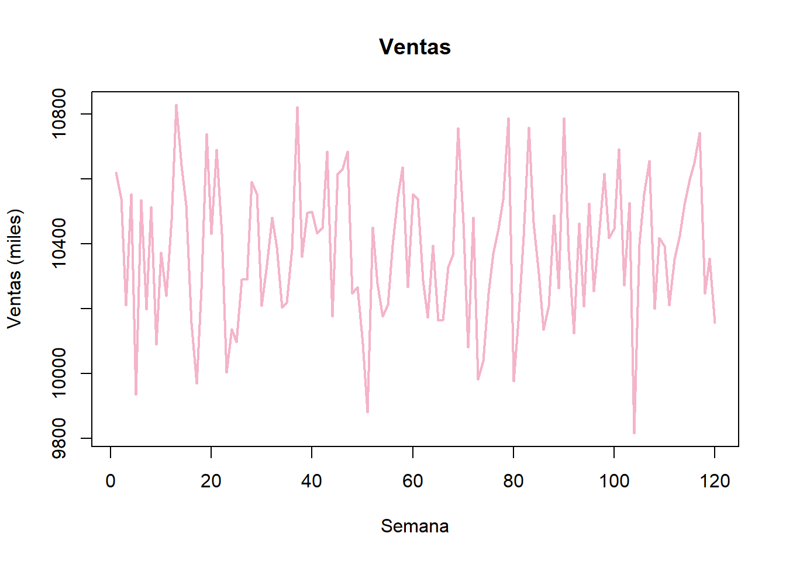
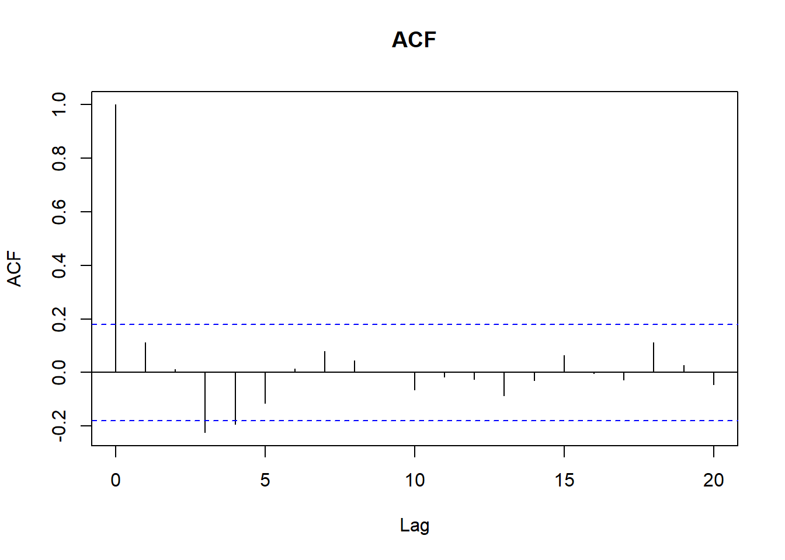
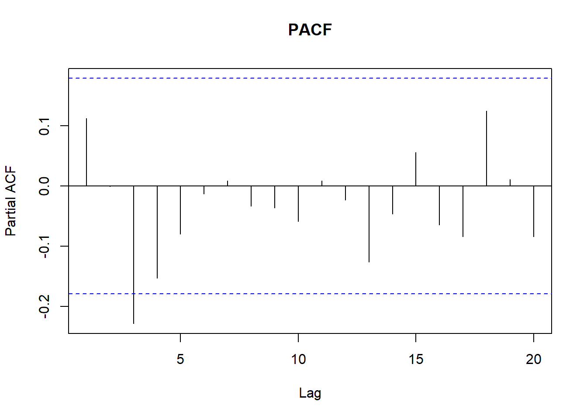
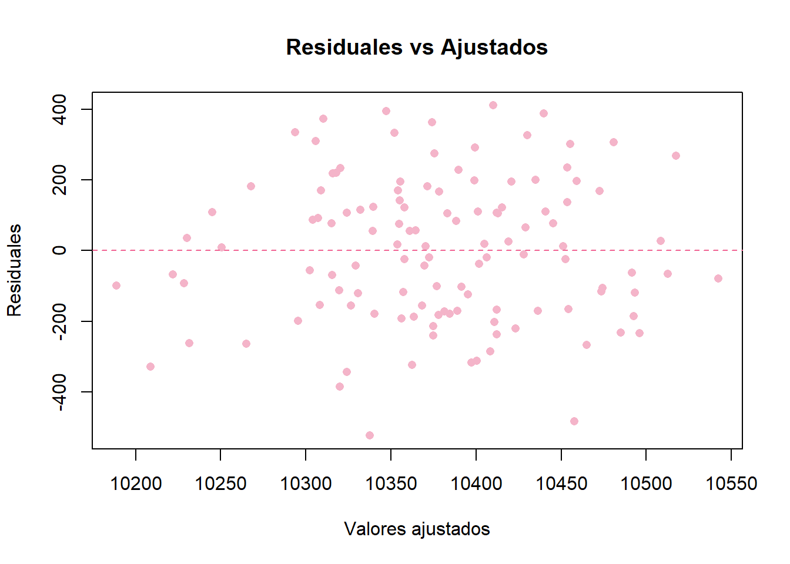
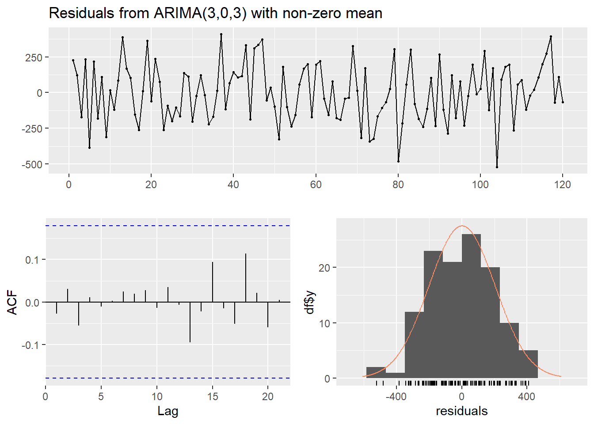
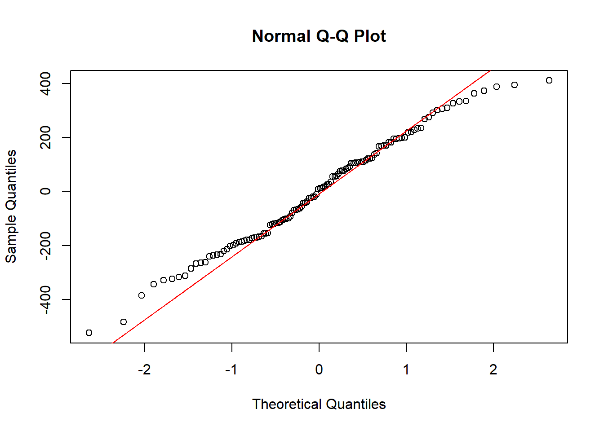
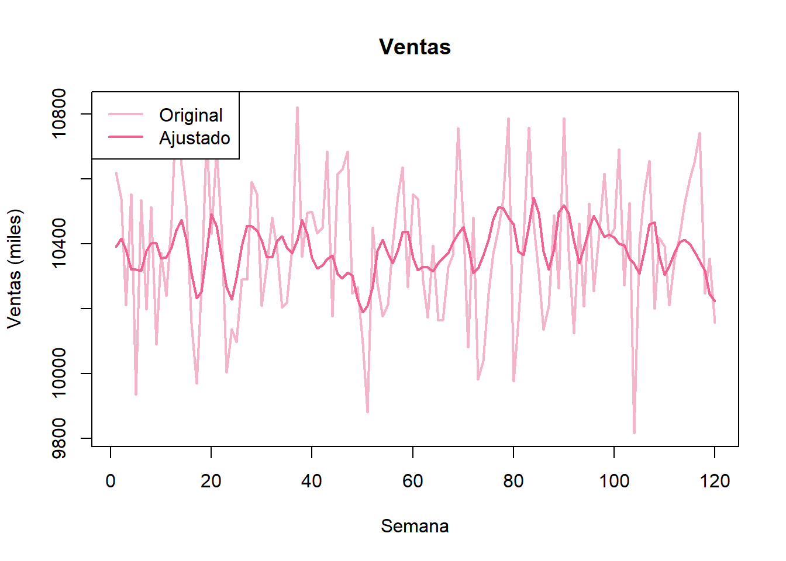

Código
### VENTAS DE FARMACEÚTICOS ###
### Librerías necesarias
library(nortest) # Anderson-Darling
library(forecast) # Librería necesaria para la función Arima
library(tseries) # Prueba Dickey-Fuller para estacionariedad
ventas = c(
10618.1, 10537.9, 10209.3, 10553.0, 9934.9, 10534.5, 10196.5, 10511.8, 10089.6, 10371.2,
10239.4, 10472.4, 10827.2, 10640.8, 10517.8, 10154.2, 9969.2, 10260.4, 10737.0, 10430.0,
10689.0, 10430.4, 10002.4, 10135.7, 10096.2, 10288.7, 10289.1, 10589.9, 10551.9, 10208.3,
10334.5, 10480.1, 10387.6, 10202.6, 10219.3, 10382.7, 10820.5, 10358.7, 10494.6, 10497.6,
10431.5, 10447.8, 10684.4, 10176.5, 10616.0, 10627.7, 10684.0, 10246.7, 10265.0, 10090.4,
9881.1, 10449.7, 10276.3, 10175.2, 10212.5, 10395.5, 10545.9, 10635.7, 10265.2, 10551.6,
10538.2, 10286.2, 10171.3, 10393.1, 10162.3, 10164.5, 10327.0, 10365.1, 10755.9, 10463.6,
10080.5, 10479.6, 9980.9, 10039.2, 10246.1, 10368.0, 10446.3, 10535.3, 10786.9, 9975.8,
10160.9, 10422.1, 10757.2, 10463.8, 10307.0, 10134.7, 10207.7, 10488.0, 10262.3, 10785.9,
10375.4, 10123.4, 10462.7, 10205.5, 10522.7, 10253.2, 10428.7, 10615.8, 10417.3, 10445.4,
10690.6, 10271.8, 10524.8, 9815.0, 10398.5, 10553.1, 10655.8, 10199.1, 10416.6, 10391.3,
10210.1, 10352.5, 10423.8, 10519.3, 10596.7, 10650.0, 10741.6, 10246.0, 10354.4, 10155.4
)
# Gráfica de la serie de tiempo
ventas_ts = ts(ventas, start = 1, frequency = 1) # Guardamos los datos como una serie de tiempo
plot(ventas_ts, main = "Ventas",
xlab = "Semana", ylab = "Ventas (miles)",
col = "#F4B4C9", lwd = 2) 
Código
adf.test(ventas_ts) # Prueba de Dickey-Fuller para estacionariedad.
Augmented Dickey-Fuller Test
data: ventas_ts
Dickey-Fuller = -6.2859, Lag order = 4, p-value = 0.01
alternative hypothesis: stationaryCódigo
# Revisamos ACF y PACF
acf(ventas_ts, main = "ACF")
Código
pacf(ventas_ts, main = "PACF")
Código
# Ajustamos un modelo ARIMA automáticamente.
modelo = Arima(ventas_ts, order = c(3,0,3)) # Seleccionamos Arima
#modelo = auto.arima(ventas_ts)
summary(modelo)Series: ventas_ts
ARIMA(3,0,3) with non-zero mean
Coefficients:
ar1 ar2 ar3 ma1 ma2 ma3 mean
1.7218 -1.4351 0.5872 -1.6731 1.2966 -0.6235 10373.7762
s.e. 0.4589 0.5842 0.2299 0.4487 0.5242 0.1921 3.5664
sigma^2 = 43441: log likelihood = -808.7
AIC=1633.4 AICc=1634.7 BIC=1655.7
Training set error measures:
ME RMSE MAE MPE MAPE MASE
Training set 1.117581 202.2538 169.5169 -0.02774167 1.634562 0.7174565
ACF1
Training set -0.02722326Código
residuales = as.numeric(modelo$residuals) # Guardamos residuales.
ajustados = as.numeric(modelo$fitted) # Guardamos valores ajustados.
# Gráfica de ajustados vs residuales
plot(ajustados, residuales,
xlab = "Valores ajustados",
ylab = "Residuales",
main = "Residuales vs Ajustados",
pch = 16, # punto sólido
col = "#F4B4C9")
abline(h = 0, col = "#F06292", lty = 2)
Código
checkresiduals(modelo)
Ljung-Box test
data: Residuals from ARIMA(3,0,3) with non-zero mean
Q* = 0.87451, df = 4, p-value = 0.9282
Model df: 6. Total lags used: 10Código
ad.test(residuales) # Prueba de normalidad para los residuales
Anderson-Darling normality test
data: residuales
A = 0.42528, p-value = 0.3115Código
qqnorm(residuales)
qqline(residuales, col = "red")
Código
# Gráfica de la serie de tiempo
plot(ventas_ts, main = "Ventas",
xlab = "Semana", ylab = "Ventas (miles)",
col = "#F4B4C9", lwd = 2)
#points(ventas_ts, pch = 16, col = "#F4B4C9") # Graficamos los datos con circulos
ajustados_ts = ts(ajustados)
# Encimamos los valores ajustados.
lines(ajustados_ts, col = "#F06292", lwd = 2)
#points(ajustados, col = "#CE93D8", lwd = 2, pch = 16)
# Añadir leyenda
legend("topleft", legend = c("Original", "Ajustado"),
col = c("#F4B4C9", "#F06292"), lwd = 2)